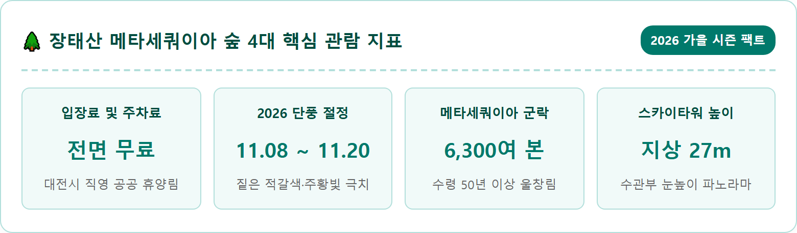
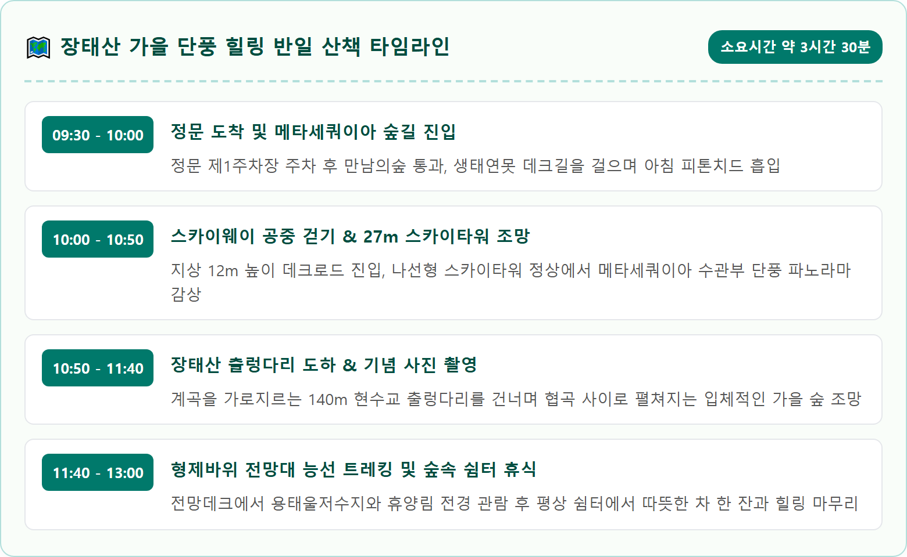
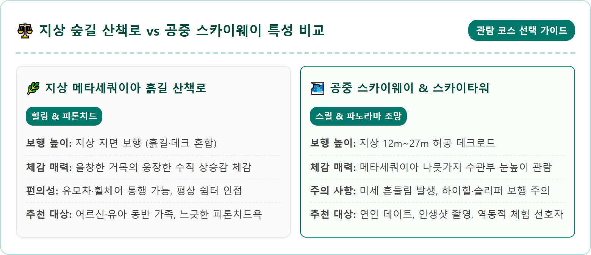
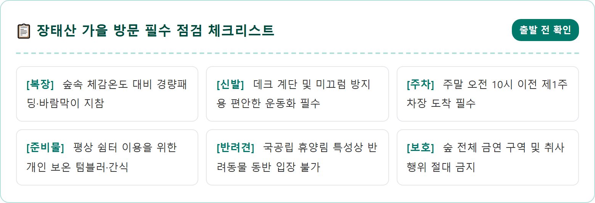
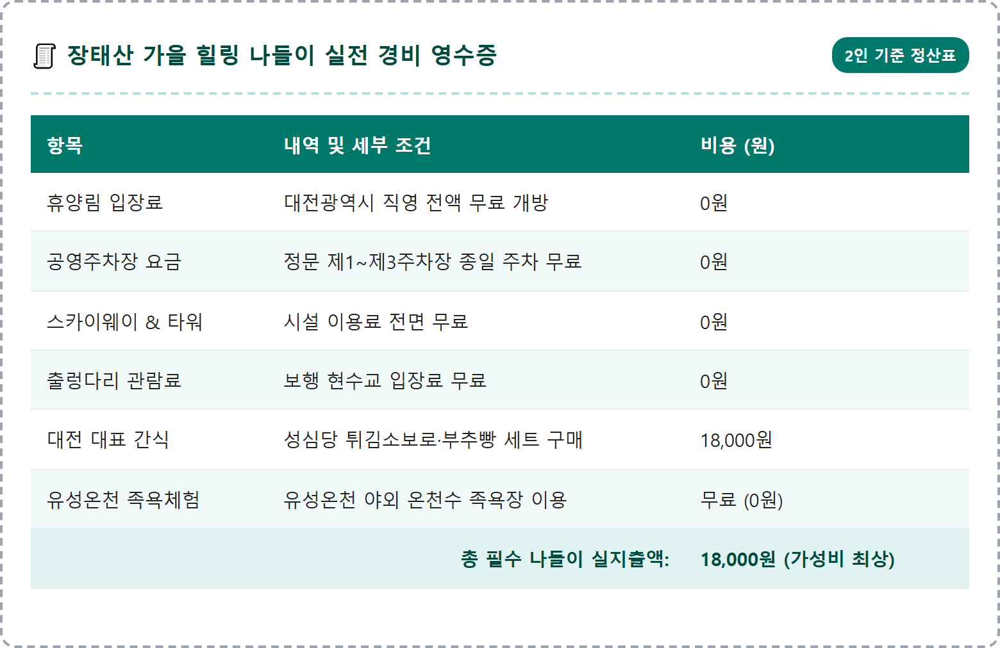
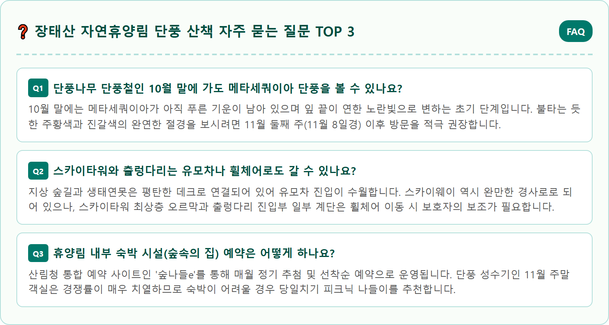

A stunning, photorealistic wide-angle eye-level landscape photograph of Jangtaesan Natural Recreation Forest in Daejeon during mid-November autumn peak. Towering, fifty-year-old metasequoia trees with vibrant golden orange and deep reddish-brown needle foliage reach high into the clear crisp autumn sky. A wooden suspended canopy skyway walkway weaves elegantly through the middle layer of the tall forest canopy, with gentle morning sunlight rays filtering through the amber foliage creating soft volumetric crepuscular lighting. Gentle mist drifts above the fallen orange needle carpet below. Natural colors, ultra-high resolution, 8k photography, serene healing atmosphere, shot on full frame camera, 1:1 aspect ratio.





